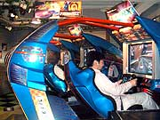
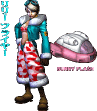
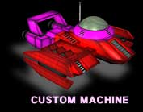
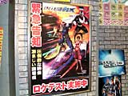
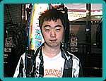
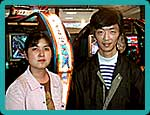
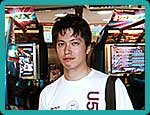
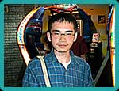
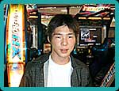

|
|  今度はロケテスト中のアーケード版『F-ZERO AX』が置いてある、池袋GIGOへやって来ました。ここには全身を包み込むような大きな筐体が４台並んでいます。自慢じゃありませんが、編集長は自動車免許を持っていない人間です。そんな私が乗っても平気なのでしょうか。かなり心配です。さて、いったいどんな展開が待っているのでしょう？
|
まず目をひくのは、全身を覆うようなブルーファルコンをイメージした斬新な形の筐体です。乗り込むとシートを前後にずらすことができます。これで身長差(あえて足の長さとは言いません！)によるアクセル、ブレーキへの影響も無事に解消です。そして、シートベルトを締めないと、「何か」が起きないらしいのです。「何か」って何だろう？
 レース前に、自分のオリジナルマシンが一台保有できる「F-ZEROライセンスカード」を購入。マシンは、AXオリジナルパイロットの"リリー・フライヤー"が操る"バニーフラッシュ"に決め、続いて走行コースを選択。 ハンドルを握っていよいよレーススタートです。正直なところ、自動車免許のない人間がちゃんと動かせるのかな…という不安でドキドキでした。コントローラではなくハンドル操作なので、どうしても勝手が違うんじゃないかなと思っていたのです。ちょっと怖いな〜…。
レースがはじまってハンドルを切ると、驚いたことにそれに倣ってシートが左右に揺れます！ はじめに装着したシートベルトは、左右に振られても落とされないためだったわけですね。視覚だけでなく、全身で走りがリアルに感じられます。まさに体感ゲームです！ はじめのうちはゴンゴンとコースの両脇にぶつかってガクガク揺れながら走っていた編集長ですが、一周目、二周目と走っていくうちにようやく操作にも慣れ、ブーストで加速を楽しむ余裕が出てきました。その加速がまた、最高に気持ちいい！ 楽しい！ 興奮気味に走っているうちに、無事ゴール。ゴールできた達成感だけでなく、爽快感が後に残りました。また乗りたーい！
レースが終わると、最初に購入した「F-ZEROライセンスカード」が出てきます。このカードには、自分の走行記録が継続的にセーブされていくみたい。レース結果に応じて配分される「パイロットポイント」は、新しいパーツを購入するために必要になってきます。これとは別に「パイロットランク」というプレイヤーの腕を評価する格付けみたいなものもありましたよ。
 実は、この「F-ZEROライセンスカード」は『GX』との連動にも深く関係しています。詳しく説明すると『AX』に「メモリーカード」と「F-ZEROライセンスカード」を同時に挿した状態でプレイすると、「F-ZEROライセンスカード」の記録内容が、メモリーカードにダウンロードされるんです。つまり『AX』で取得したマシンパーツなんかは『GX』にお持ち帰りできるというわけ。『AX』専用パーツと『GX』専用パーツが連動によって融合すれば、カスタマイズのバリエーションは合計で約10,000通りにもなるんだとか。
さらに、"同時挿し"すれば「タイムアタックモード」だって拡がっていきます！メモリーカードに入れて『GX』から持ってきた『GX』専用マシンやカスタムマシンで『AX』のインターネットランキングに参加できるんです。"アーケードゲームユーザー" と ﾓ家庭用ゲームユーザーﾓ の意地と意地がぶつかり合う熾烈なランキング争いが展開されそうで、今からとっても楽しみ。
臨場感の溢れる『F-ZERO AX』は、『F-ZERO GX』と連動することで、これまでになかったゲームの楽しみを
|
|  『池袋GIGO』はゲーム大好きな人が集まる、アーケードゲームのメッカのような場所。取材した日は全国一斉稼働にさきがけて、『F-ZERO AX』のロケテストが行われていました。並んでいる筐体は４台、初めて見るレースゲームに、お客さんたちも少々とまどい気味かな？ すでにプレイしている人を後ろのほうからちょっとのぞいてみて、そのカッコよさにひきつけられて自分も試してみる、という感じです。実際のユーザーさんの声を聴いてみました！
|
| 「いままでのゲームとはぜんぜん感覚が違って、おもしろかったです。シートが動いてビックリしました。慣れるとおもしろくなってきて、ハマると思います(21歳)」 |
 |
|  |
「ハデさが良かったです。コースがたくさんあったので、いろいろやってみたいと思いました。家庭用と両方やる人には、それなりの見返りやお楽しみ要素があると嬉しいですね。(35歳、30歳)」 |
| 「コース設定が360°回って飛んでるという感じで、楽しかったです。シートが360°回ったりしたらもっと面白いですね(笑)。ゲームキューブで練習して、それがゲームセンターで反映できるというシステムは素晴らしいと思います。(30歳)」 |
 |
|  |
「いままでのシリーズもやってたんですが、キャラクターが際だっているところがいいですね。(23歳)」 |
| 「実際に動く部分が楽しいですね。家庭でもこういう風にできたらいいなと思います。連動部分は期待してます。まずはキューブでやってみたいです。(15歳)」 |
 |
| 「セガと任天堂のコラボで体感ゲームが出る、というのでやってみました。ゲーム性が違うものになっていたらという心配があったんですが、やってみたらなくなりました(笑)。ムチャクチャなスピードがすごくいいですね。ゲームキューブとの連動があるということなので、ぜひやってみたいです。(30歳)」 |
| 「ロケテストの初日からやってます。前作になかったような立体感や動きがあって、実際に乗っているような感覚がリアルです。(19歳)」 |
| ■店員さんから・・・ |
| 「すでにやり込んでいる方もかなりいらっしゃいます。人気のほうは間違いなく出ると思います。インターネットランキングできるようになってくると、さらにたくさんのお客さんが遊ばれると思います。『F-ZERO GX』のほうにもたいへん期待を寄せていまして、いままでゲームセンターにあまりいらっしゃらなかったお客様にも、それが出ることで足を運んで頂けるようになると嬉しいですね(池袋GIGOスタッフ)」 |
|